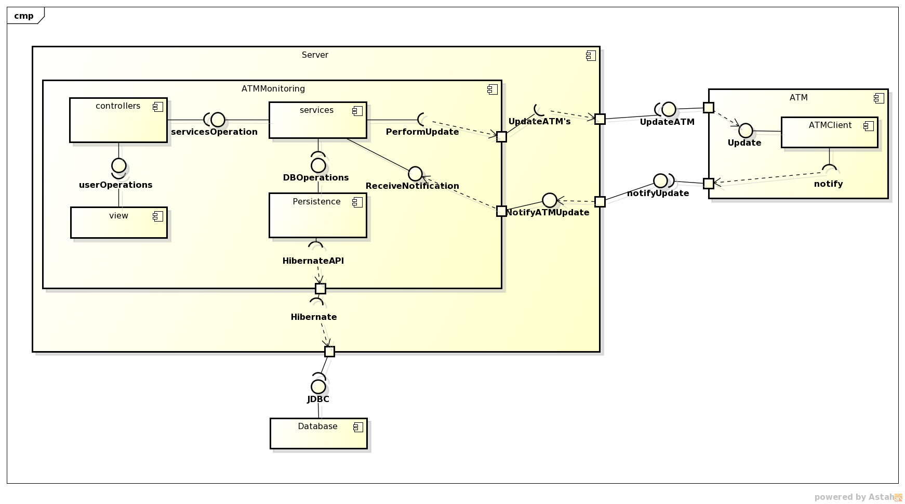

Component Diagram¶
Below we can check the general architecture of the system, which is based on a MVC pattern:
- Basically the ATMMonitoring is divided into four components:
- The Persistence, where all the DAO and POJO objects reside.
- The Services, which hold the objects that allow access to the persistence layer via specific and atomic business logic operations.
- The Controllers, in charge of communicating with the view and consuming the services in order to perform operations.
- The View, where all the HTML pages are (actually JSP pages that result in HTML).
ATMMonitoring communicates with two other components: first the ATMClient, that is in charge of the ATM update communication; and the Database where the information is stored.
Diagrams Download¶
This diagram was made using Astah Community Edition 6.8.0/d254c5: